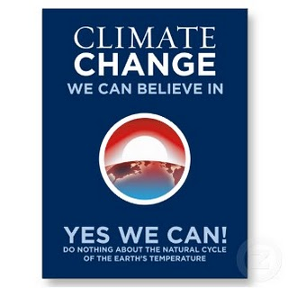
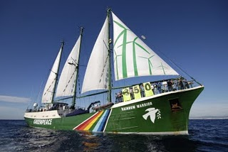

350 nedir?
24 Ekim İklim için Küresel Eylem Günü nedeniyle bol bol gündeme gelen 350 meselesine prenses bulaşmasa ayıp olurdu. Hani bazı kavramlar vardır, bir anda herkes konuşmaya başlar. Siz de utanırsınız artık o neydi diye sormaya… “350 mi? tabi canım” otamotaik cevabına dönüşüverir bütün tepkiler. Ben de konu ile ilgili cahilliğimi farkedip 350 neymiş ne değilmiş diye bir bakayım dedim. bu vesileyle gezegenimiz için çok önemli bir süreç olan Kopenhag iklim değişikliği toplantısından da bahsetmek istiyorum. Zira kyoto’dan kopenhag’a giden çetrefilli yolu görmek, atmosferdeki sera gazı emisyonlarının ne ölçüde düşürülebieceğini, bunun için nasıl bir uluslararası mutabakat sağlanabileceğini anlamak için de önemli.
Lisede fizik hocamız, sınavla rda sorduğu sorular için hesapladığımız sonuçların yanına birimlerini yazmadığımızda, o sorudan puan vermezdi. Cevabını bulduğum sorudan not alamayıp hocanın bol bol ahını aldım zamanında. Sonradan duruma uyandım tabii ki. Adamın bir bildiği var. 350 derken 350 patatesten mi yoksa 350 kilodan mı bahsediyoruz anlamak lazım. 350 ppm, olası iklim felaketini önleyebilmek için atmosferde bulunması gereken karbondioksit miktarı olarak hızla özetlenip geçiyor. Ppm (part per million) aslen bi moleküler yoğunluk birimi. herhangi bir ortamda adı geçen partikülün görece yoğunluğu konusunda bize bilgi veriyor. 350 ppm dediğim zaman, atmosferdeki her bir milyon gaz partikülünün arasında, 350 partikül karbondioksit var diyorum aslen. tabi yine de biraz amiyane kaçıyo bu tabir, daha fazla ayrıntıya bulaşmıyorum.
rda sorduğu sorular için hesapladığımız sonuçların yanına birimlerini yazmadığımızda, o sorudan puan vermezdi. Cevabını bulduğum sorudan not alamayıp hocanın bol bol ahını aldım zamanında. Sonradan duruma uyandım tabii ki. Adamın bir bildiği var. 350 derken 350 patatesten mi yoksa 350 kilodan mı bahsediyoruz anlamak lazım. 350 ppm, olası iklim felaketini önleyebilmek için atmosferde bulunması gereken karbondioksit miktarı olarak hızla özetlenip geçiyor. Ppm (part per million) aslen bi moleküler yoğunluk birimi. herhangi bir ortamda adı geçen partikülün görece yoğunluğu konusunda bize bilgi veriyor. 350 ppm dediğim zaman, atmosferdeki her bir milyon gaz partikülünün arasında, 350 partikül karbondioksit var diyorum aslen. tabi yine de biraz amiyane kaçıyo bu tabir, daha fazla ayrıntıya bulaşmıyorum.
Bildiğiniz gibi karbondioksit ( metan, su buharı, CFC’ler, azot oksitleri, ozon yanında) bilinen en önemli sera gazı. Sera gazı dediğimiz gazların ortak özelliği de şu: Normalde dünyaya çarpıp yansıması gereken güneş ışınlarından kaynaklı ısıyı bünyelerinden tutabilme özelliği var bu gazların (aynen bir sera camı gibi: ışık geçer ısı kalır). Gezegenimizdeki karbondioksit, bitkisel yaşamın kaynağı olan fotosentezin hammaddesi olarak, dünyada yaşamın sürebilmesi için vazgeçilmez bir gaz. Tadından yenmez bişey anlayacağınız. Olmasaydı hepimiz çook üşürdük. Atmosf erimizin oluşmasında ve dünyada istikrarlı bir iklimin oluşması için çok önemli bir rolü olmuş karbondioksit gazının. Taa ki bundan 200 yıl önce başlayan sanayi devrimine kadar. Bütün insanlık tarihi boyunca, karbondioksit seviyesi 275ppm civarında kalmış hep.Ta ki 200 yıl öncesine kadar… Aşırı karbondioksit salınımına yol açan fosil yakıtların (önce kömür sonrasında petrol ve türevleri) artan kullanımıyla bugün atmosferdeki karbondioksit seviyesi 390 ppm seviyesine gelmiş. Mevcut üretim- tüketim tarzı ile bu seviyeye her yıl 2ppm daha ekleniyor. Ä°ÅŸte hali hazırda gerçekleşmeye başlayan iklim felaketinin önüne geçebilmek için bu seviyeyi 350ppm seviyesine indirmemiz gerekiyor. Tabi bunu ben kafamdan atmıyorum. Dünya çapında,önde gelen iklim bilimciler böyle diyor. Zira bana kalsa 275 ppm seviyesine indirirdim tekrar.
erimizin oluşmasında ve dünyada istikrarlı bir iklimin oluşması için çok önemli bir rolü olmuş karbondioksit gazının. Taa ki bundan 200 yıl önce başlayan sanayi devrimine kadar. Bütün insanlık tarihi boyunca, karbondioksit seviyesi 275ppm civarında kalmış hep.Ta ki 200 yıl öncesine kadar… Aşırı karbondioksit salınımına yol açan fosil yakıtların (önce kömür sonrasında petrol ve türevleri) artan kullanımıyla bugün atmosferdeki karbondioksit seviyesi 390 ppm seviyesine gelmiş. Mevcut üretim- tüketim tarzı ile bu seviyeye her yıl 2ppm daha ekleniyor. Ä°ÅŸte hali hazırda gerçekleşmeye başlayan iklim felaketinin önüne geçebilmek için bu seviyeyi 350ppm seviyesine indirmemiz gerekiyor. Tabi bunu ben kafamdan atmıyorum. Dünya çapında,önde gelen iklim bilimciler böyle diyor. Zira bana kalsa 275 ppm seviyesine indirirdim tekrar.
Bu ppm meselelerini, göze çok bilimsel gözüktüğü için pek fazla gündeme ve söyleme sokmuyordu, konuyla ilgili olarak halkı bilinçlendirmeye çalışanlar. Ama aksinin ne kadar kafa karıştırdığı da görüldü. Şimdi ben gezegende iki derece küresel ortalama sıcaklık artışından bahsediyorum misal. Bizim Bakkal ahmet ise, “-oooo bugun de çok sıcak, bu iklim değişikliği dağıttı bizi” diye geyiğe veriyor bünyeyi. Halbuki küresel ortalama sıcaklığın yükselmesi, gezegenin bazı bölgelerinde daha soğuk ya da daha yağışlı, ya da daha kurak vs. vs. hava durumlarına yol açabiliyor. Kaos biliminin doğmasında meteoroloji ve iklim biliminin katkısı düşünüldüğünde şöyle diyebiliriz: Bu iş biraz kaotik 🙂 bilim adamının şahı gelse istanbuldaki sel felaketinin iklim değişikliğinden kaynaklandığını söyleyemez. Tabi kaynaklanmadığını da söyleyemez. Zira eldeki bilimsel veriler ve iklim bilimi henüz bu noktadan çok uzakta. Ama artan sel felaketlerinin giderek hızlanmaya başlayan iklim değişikliğine bağlı anomaliler olduğu öngörülebilir. İklim değişikliinin bizi felakete sürüklediği konusunda da artık hiçkimsenin bir şüphesi yok.
Yakın zamana kadar bu genel sıcaklık artışıyla halk bilgilendirilmeye çalışılıyordu. Ya da Kyoto sürecinde gördüğümüz gibi diyorduk ki “atmosferdeki sera gazı emisyonu 1990 seviyesine çekilmelidir” gibi daha rakamlardan arınmış ifadeler kullanılıyordu. Tabi doksanlı yıllar ve ikibinlerin ortasına kadar süren bilimsel bir tartışma da kesin konuşmayı önlüyordu. Siz bunun adına bilimsel temkin diyebilirsiniz. Ama son yirmi yılda iklim değişikliği billimsel gerçeğini çürütmek için, petrol kömür ve bilimum lobiler tarafından desteklenen master ve doktara tezlerini, kurulan düzmece enstitüleri bir inceleyin, kendiniz karar verin. Benim yorumum bu sürecin büyük bir bölümünün kar hırsı ve gezegenin geleceği arasında süren bir enformasyon – dezenformasyon savaşı olduğu yönünde.
Bu vesileyle biraz hafıza da tazeleyelim. Türkler olarak “Ä°klim değişikliği mi? hadi canım! yok artık” tepkisini vermeyi bırakalı sadece birkaç yıl oldu. Öyle dedelerimiz zamanından bahsetmiyorum. Yanılmıyorsam 2003 yılında Atlas Dergisi, 15 sayfa ayırdığı iklim değişikliği dosyası ile iklim değişikliğinin insan eliyle gerçekleşmediğini ispat etmeye kalkışmıştı. Bununla da yetinmeyip bir bilim şarlatanını türkiyeye davet etmişlerdi. Dergiyle dağıtılan bedava biletlerle, yaklaşık 1000 kişinin katılıdğı bir konferansta, şimdi duysanız katıla katıla güleceğniz iddialar ortaya atılmıştı. Yıllarca iklim değişikliğinden bahsederken deli peygamber muamelesi görmenin hırsıyla yazıyorum bütün bu satırları da zaten 😛
Medyanın iklim değişikliği kavramından bir iddia olarak bahsetmeyi bırakması, ve sokaktaki boyacının iklim değişikliğini konuşmaya başlaması, “Uygunsuz Gerçeklik” filminin yayınlanmasını takip eden üç ay içinde gerçekleşti. Gözlerimle gördüm, ağzım açık izledim bütün olan biteni. Bunun adına paradigma kayması diyorlar. Toplumsal önkabulllerden herhangi birindeki ani değişimin, iklim değişikliği özelinde sebeplerini oturup burada incelemeye kalksak bir doktora tezi olur, ben bi ara niyetlenmiştim bu konuda yazmaya, odtü’den bir abimiz benden önce davranmış, tez yapmış :).
İyice dağıttık konuyu yine. Çok önemli bir hikaye olmasına rağmen “350” hareketinin hikayesini ve internette örgütlenme modelini anlatmayı Nazım’a bırakalım. Çok düşük bütçelerle ulaşılan ve birlikte, dünya çapında harekete geçirilen insan sayısı olarak 24 ekim 2009 bence tarihi bir gündü. Ama ben, sıkıcı olmak pahasına, biraz daha Kopenhag sürecinden bahsetmek niyetindeyim. Efenim Kopenhag demeden Kyoto demek gerekiyor tabii ki. Kyoto protokolü, 184 ülke tarafından imzalandı. Geçtiğimiz yıl Türkiye de, galiba Angola’nın ardından (bunu kafadan attım:) Protokolü imzaladı.Bizim dışişlerinin görüşmeler sırasındaki kasaba kurnazlıklarını birisi lütfen kitap yapsın, karikatürcüler size sesleniyorum. Kyoto protokolü aslen şunu diyordu. Gelişmiş ülkeler (Ek-I ülkeleri), sera gazı salımlarını 1990 seviyesinin %5.2 altına indirsinler. Geri kalan ülkeler de çeşitli taahhütlerde bulundular. Anlaşma 1997 yılında imzaya açıldı ama yürürlüğe girmesi bir şarta bağlandı. Anlaşmayı onaylayan ülkelerin toplam sera gazı salımı %55’e ulaşmadan bu protokol yürürlülüğe giremez. bu çoğunluğun sağlanması 8 yıl aldı. Gezegendeki sera gazı salımının yüzde 36sından (1990 seviyeleri ile) sorumlu ABD ise bu anlaşmayı hala imzalamış değil. Pek sevgili Obama kardeşimizin çokuluslu şirket lobilerini bir kenara atıp ne Kyoto’yu ne de kopenhag’ı imzalamaya niyeti varmış gibi gözüküyor. Yine de ABD’de California gibi, şehir ve eyalet bazında Kyoto şartlarını gönüllü olarak yerine getirmeye çalışan birçok girişim mevcut.
Anlaşma daha 2005 yılında yürürlüğe girdi. Zaten 2012 yılnda da yükümlülük dönemi sona eriyor. bu süre içinde taraflar her yıl toplanıp kim ne kadar CO2 salacak, kim ne ödeyecek şeklinde bir pazarlığa oturdu. Gelişmiş ülkeler, Çin ve Hindistan gibi gelişmekte olan ülkeler adım atmadan adım atm ak istemiyorlar. Zira iklim dostu teknolojilerin uygulanması ciddi bir maliyet artışı ve rekabet kaybı getirecek. Gelişmekte olan ülkeler ise, bu adamlar iklimi batırdı, bedelini niye biz ödüyoruz, bırakın bi refah yüzü görelim die bastırmaktalar. Sonunda Kyoto Prtokolü ve ek protokoller ile erişilen mutabakat devede kulak gibi kaldı. Ama bu uluslararası mutabakata bile ulaşılması, o kadar zaman alan ve sancılı bir süreç oldu ki, kimse yüksek sesle Kyoto Protokolünü kötülemeye cesaret edemedi. Sonuçta iklim konusunda bağlayıcı ilk küresel anlaşma kendileri. Kopenhag’da yapılacak toplantı da, son 14 yıldır toplana toplana bir hal olan devletlerin bir toplantısı. Bu toplantılar COP (taraflar konferansı) adı altında yapılıyor. Kyoto protokolu tarafları icin 5nci yani COP5, iklim cerceve sozlesmesi taraflari icin 15nci yani COP15 toplantisi olacak. Bu toplantiyi digerlerinden ayıran unsur ise şu: daha önce Bali’de taraflar, Kopenhag Konferansında, 2012 sonrası taahhut donemi icin anlaşmaya varmak için karara vardı. Bu ne demek yahu? turkcesi, arkadasım yil 2010 oldu neredeyse, simdi anlasamadik ama söz kopenhag’da anlasacagiz demek oluyor.
ak istemiyorlar. Zira iklim dostu teknolojilerin uygulanması ciddi bir maliyet artışı ve rekabet kaybı getirecek. Gelişmekte olan ülkeler ise, bu adamlar iklimi batırdı, bedelini niye biz ödüyoruz, bırakın bi refah yüzü görelim die bastırmaktalar. Sonunda Kyoto Prtokolü ve ek protokoller ile erişilen mutabakat devede kulak gibi kaldı. Ama bu uluslararası mutabakata bile ulaşılması, o kadar zaman alan ve sancılı bir süreç oldu ki, kimse yüksek sesle Kyoto Protokolünü kötülemeye cesaret edemedi. Sonuçta iklim konusunda bağlayıcı ilk küresel anlaşma kendileri. Kopenhag’da yapılacak toplantı da, son 14 yıldır toplana toplana bir hal olan devletlerin bir toplantısı. Bu toplantılar COP (taraflar konferansı) adı altında yapılıyor. Kyoto protokolu tarafları icin 5nci yani COP5, iklim cerceve sozlesmesi taraflari icin 15nci yani COP15 toplantisi olacak. Bu toplantiyi digerlerinden ayıran unsur ise şu: daha önce Bali’de taraflar, Kopenhag Konferansında, 2012 sonrası taahhut donemi icin anlaşmaya varmak için karara vardı. Bu ne demek yahu? turkcesi, arkadasım yil 2010 oldu neredeyse, simdi anlasamadik ama söz kopenhag’da anlasacagiz demek oluyor.
Tabi boylesine buyuk bir devletler arası pazarlik sureci oyle tek bir konferans ile olmuyor. Taraflar teknik, burokratik ve politik seviyelerde bircok hazirlik (aslen pazarlık) toplantisi yapıyorlar. Bu toplantilarin gidisatına bakıldığında manzara pek de heyecan verici gözükmüyor. Dünya kamuoyunun liderler üzerinde baskı yaratma çabası da biraz bundan kaynaklanıyor. 350ppm gibi bir hedefin gerçekleşebilmesi icin fosil yakıt bağımlısı üretim ve tüketim modellerinde devrimsel bir değişikliğe gidilmesi yetmiyor. Sonuçta Almanya gibi bir ülke böyle bir teknolojik ve toplumsal dönüşümü göze alabliiyor olabilir. Ama Çin ve Hindistan gibi ülkelerin fosil yakıtsız bir gelecek kurmalarını hem finansal hem de teknoljik anlamda kolaylaştırma görevi de yine büyük oranda gelişmiş ülkelerin sorumluluğu. Konuyu ülkeler ve ekonomiler bazında tartışmak aslında oldukça abes. Zira gezegenin bacasını saran ateş, kuzey kutbunda yaz deniz buzullarını neredeyse tamamen eritmeye başlamış, gözü grönland’ın kalıcı buz tabakasına dikmiş durumda.
Avrupa yetmişli yıllardaki çevresel uyanışının ardından, bütün enerji yoğun kirli teknolojileri başarıyla az gelişmiş ülkelere transfer etmeyi başardı. Eğer Ren nehri artık siyanür akmıyorsa bunun bedelini hintlilerin ya da Filipinlillerin ya da Kolombiyalıların, ya da bergamalıların ödediği kesin. Kopenhag süreci bu çevresel adaletsizlik ibresinin artık tersine dönüp dönmeyeceği ile ilgili önemli bir gösterge olacak. Ama uluslararası çok taraflı bir birleşmiş milletler toplantısından devrim bekleyenleri de hayal kırıklığına uğratacağı kesin. Biz Rainbow Warrior ile yavaş yavaş Kopenhag’a ilerken, iklim zirvesine kalan kırk günde bu meselelerden daha yoğun bir şekilde bahsedeceğim.
Tuna


{kind=link}
{kind=link}
{kind=link}